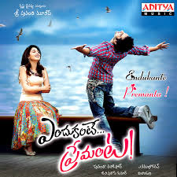
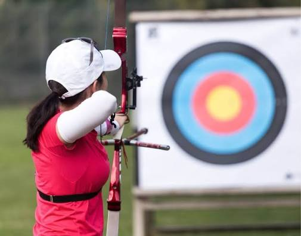

Favourite Food
Biryani

Biryani is a mixed rice dish traditionally made with rice, meat (chicken, goat, beef), seafood (prawns or fish), or vegetables, and spices. It was present in Mughal-era India, though whether it was created there is debated. It is thought to derive from a Persian rice dish, either pilau or birinj biryan. The dish makes use of slow-cooking as in Persian pilau, combined with Persian-style yoghurt-marinated meat and a spicy Indian style of cooking; it was likely developed in the Mughal court kitchens. It is also possible that biryani was brought to South India before the Mughal era, or that pilau was brought to India and biryani was developed from it before being adopted by the Mughals.
Favourite Movie
Endukante Premanta

Endukante Premanta (transl. Because It's Love) is a 2012 Indian Telugu-language fantasy romantic comedy film written and directed by A. Karunakaran. Produced by Sravanthi Ravi Kishore, the film stars Ram Pothineni and Tamannaah Bhatia. It features music scored by G. V. Prakash Kumar and dialogues by Kona Venkat. The film was released theatrically on 8 June 2012.
The film deals with love between two souls across two different eras. Both Ram and Tamannaah play dual roles in the film, with each of those pairs of roles set in 1980 and 2012, respectively.[3] This film's plot is based on the American film Just like Heaven (2005). Endukante Premanta was simultaneously shot in Tamil as Yen Endral Kadhal Enben (transl. Because I'II Say It's Love), though the Tamil version never saw a theatrical release
Favourite Place
Home
Home is a safe haven and a comfort zone. A place to live with our families and pets and enjoy with friends. A place to build memories as well as a way to build future wealth. A place where we can truly just be ourselves.
The right people and experiences can make any space feel special, even lacking in physical or emotional comforts. Yet conversely, when we feel at home in a place due to other important factors, such as comfort and community, we are more likely to create positive and enduring memories.
A home, or domicile, is a space used as a permanent or semi-permanent residence for one or more human occupants, and sometimes various companion animals. Homes provide sheltered spaces, for instance rooms, where domestic activity can be performed such as sleeping, preparing food, eating and hygiene as well as providing spaces for work and leisure such as remote working, studying and playing.
Favourite Actor
Suriya is an Indian actor and film producer who works primarily in Tamil cinema. He made a commercially successful cinematic debut in Vasanth's Nerrukku Ner (1997). After few critical and commercial failures, Suriya collaborated with Vasanth again in Poovellam Kettuppar (1999), his first film with his wife Jyothika.
In 2001, Suriya starred in Bala's Nandhaa as an ex-convict trying to find his place in society. The film was critically acclaimed and became a turning point in his career. His roles as a police officer in Gautham Vasudev Menon's Kaakha Kaakha (which became his first blockbuster) and a con artist in Bala's Pithamagan, established him as one of Tamil cinema's leading actors. Suriya's performances in both films were praised, winning him a Best Actor nomination for the former and the Best Supporting Actor for Pithamagan at the 51st Filmfare Awards South. The following year, he played dual roles—a hunchback and a college student—in Perazhagan. Suriya's performance was again praised, and he received his first Filmfare Best Actor award. He was also acclaimed for his performance as a student leader in Mani Ratnam's Aayutha Ezhuthu (2004).
Favourite Sport
Archery

Archery is the sport, practice, or skill of using a bow to shoot arrows at a target. The primary types of bows used are the recurve bow, longbow, and compound bow. Regulated globally by World Archery, it is an Olympic sport that tests focus, strength, and precision
The oldest known evidence of arrows (not found with surviving bows) comes from South African sites such as Sibudu Cave, where the remains of bone and stone arrowheads have been found dating approximately 72,000 to 60,000 years ago
However, the earliest remains of complete bows and arrows are found in Northern Europe. These include the evidence found at Mannheim-Vogelstang, in modern-day Germany, dated 17,500 to 18,000 years ago, and also at Stellmoor dated 11,000 years ago
In modern target archery, the standard shooting stance positions the archer's body at or nearly perpendicular to the target and the shooting line, with feet placed approximately shoulder-width apart. This is commonly referred to as a "neutral stance". More experienced archers may adopt variations such as an "open stance" (front foot angled toward the target) or "closed stance" (front foot angled away), depending on the individual preference and shooting style.